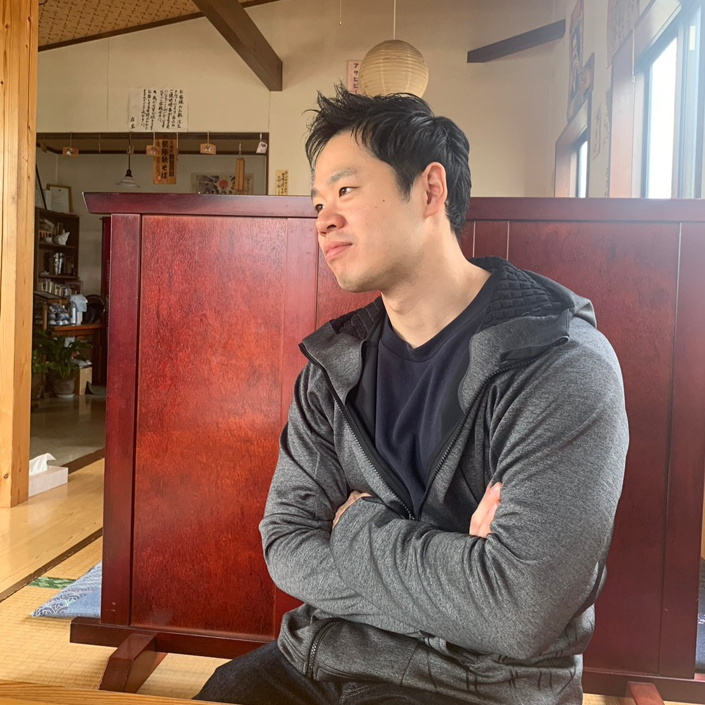

桜井 惇 (Sakurai Atsushi)
生年月日: 1996/05/16
出身地: 茨城県
職業: データサイエンティスト
座右の銘
Live as if you were to die tomorrow.
Learn as if you were to live forever.
Mahatma Gandhi

経歴
- 2012/04 - 2015/03茨城県立下妻第一高等学校
- 2015/04 - 2019/03明治大学 理工学部 応用化学科
- 2019/03 - 2021/01ポーカー専業（NLHE）
- 2021/01 - 2023/12産業技術総合研究所 ナノ材料研究部門
- 2024/01 - 現在 産業技術総合研究所 人工知能センター
趣味・関心
- ウエイトトレーニング・パワーリフティング
- 高校時代に野球技術向上の目的でトレーニング開始
- パワーリフティング大会出場経験 詳細
- ポーカー
- NLHEライブキャッシュ（他ゲームのルールは知ってはいるが、、）
- ご飯を食べていた時期がありました（2年程度）
- 投資関連
- 日本株・米国株
- クリプトカレンシー
- トレードBot開発
- バイブコーディング
- Webアプリ開発
- トレードBot開発
- その他スポーツ
- 基本的にスポーツ全般好き
審査系のスポーツは、そこまで好きではないが、、
- 野球
中・高で野球部、大学でも一応、理工系硬式野球部に所属
MLB観戦 - パワーリフティング（前述のとおり）
- ボクシング観戦
- 基本的にスポーツ全般好き